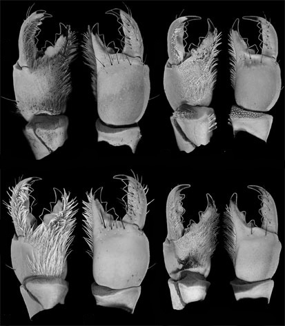
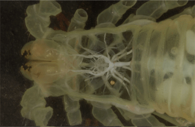
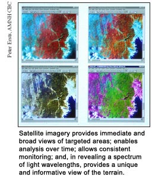
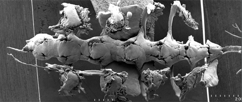
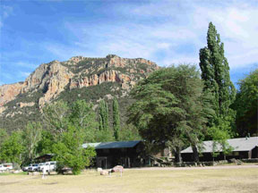

Lorenzo Prendini's Arachnology Lab has access to the parallel virtual supercomputer clusters, the Invertebrate Zoology Histological Laboratory, the GIS Laboratory of the Center for Biodiversity and Conservation, the Microscopy and Imaging Facility, and the AMNH Library. Other services and facilities of the AMNH are also available.

Parallel Virtual Supercomputer Cluster
The AMNH science computing cluster, designed especially for phylogenetic analysis of genomic data, comprises 560 Pentium III processors (432 Gflop peak performance). Built with 'off-the-shelf' components, it is the fastest parallel computing cluster installed in an evolutionary biology laboratory and one of the fastest in a non-defense environment. Its size is presently being doubled and its capacity tripled. An AMNH staff member attends to the upkeep of the cluster, technical assistance and training of users.

Histological Laboratory
The Histological Laboratory of the Division of Invertebrate Zoology is fully equipped for anatomical work.
It includes automated embedding facilities, paraffin and plastic serial thick and semi-thin sectioning
equipment (including microtome, glass knife maker, etc.) as well as standard laboratory equipment. If
required for the analysis of histological slides, 3-D reconstruction software and digitizing hardware
are available.

Scientific Illustration
The staff of the Division of Invertebrate Zoology includes Steve Thurston, a scientific illustrator,
proficient in graphical software techniques as well as traditional scientific illustration.

Remote Sensing & GIS Laboratory
A Remote Sensing and GIS laboratory, with UNIX workstations, digitizers and site licenses for ArcView GIS, ARC/INFO, and ArcUSA,
is available at the Center for Biodiversity and Conservation (CBC). The CBC
has also produced a website to promote the use of remotely sensed
imagery (such as satellite imagery and aerial photography). The site provides remote sensing guides to locate,
download, and view satellite imagery; material and information for remote sensing training courses and
workshops offered by the CBC and other organizations; interactive tools to illustrate fundamental remote
sensing concepts; and links to an array of remote sensing information available on the Internet.

Microscopy and Imaging Facility
The AMNH Microscopy and Imaging Facility has a state-of-the-art Hitachi Scanning Electron Microscope and a Zeiss Variable Pressure SEM, including all peripherals (e.g. critical point dryer, sputter coater and darkroom). The SEMs are equipped for standard photography, as well as electronic image capture and handling. The facility is also equipped with a GE PHOENIX CT Scanner and a Zeiss ConFocal Laser Scanning Microscope for 3-D reconstruction. X-ray microanalysis (EDS) and cathodoluminescence techniques are also available. Two AMNH staff members are devoted exclusively to upkeep of the facility, technical assistance and training of users.

AMNH Library
The AMNH Research Library maintains and develops a collection of 450,000 volumes of
books and bound journals, as well as electronic and microform materials essential to the scientific, exhibition
and educational missions of the AMNH. The library currently receives more than 4,360 journals from sources worldwide.
The library is one of the best in the USA for biosystematic studies and contains a range of periodicals relevant to
systematics and phylogenetics in general, as well as journals relevant to taxonomic groups under study by AMNH
researchers. The library also contains an extensive collection of old literature, essential for nomenclatural purposes.
AMNH staff, visiting researchers, postdoctoral fellows, students, and volunteers have ready access to the library
collections and to varied services offered by library staff, from reference and bibliographic assistance to interlibrary
loans.
AMNH Publications
The AMNH publishes several peer-reviewed journals, two of which (American Museum Novitates
and Bulletin of the American Museum of Natural History, for short papers and monographs, respectively) are world-renowned for
the publication of empirical research in systematics. Further information is available at the
Office of Scientific Publications website.

Southwestern Research Station (SWRS)
The SWRS is a biological field station owned and operated by the AMNH.
Since 1955, it has served biologists, geologists, and anthropologists interested in studying the diverse
environments and biota of the Chiricahua Mountains in southeastern Arizona. The Station welcomes scientists and
advanced students from all parts of the USA and abroad to carry out their research projects. Investigators live in
comfortable cabins provided with linens and blankets, and take their meals, cafeteria-style, in a common dining
room. The main house contains a dining room, library, lounge with fireplace, ping-pong room, and laundry room.
Outside is a large swimming pool, volleyball court, and horseshoe pit. The area is laced with trails for hiking and
climbing amongst spectacular scenery. The Station is open all year but scientists must cook for themselves from
early November through early March. Facilities in the Osborn Memorial Laboratory include library, insect collection,
herbarium, vertebrate collections, photography laboratory, etc. Completed in 1992, the Technical Equipment
Laboratory provides excellent microscopic facilities, constant temperature chambers, chemical hood, low-temperature
freezer, precision balances, centrifuges, etc. Recent additions of outdoor aviary complexes and an Animal Behavior
Observatory afford outstanding facilities for ethological and behavioral ecological studies.